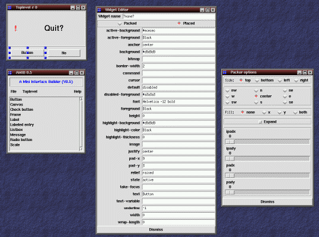

AMIB: A
Mini
Interface
Builder
AMIB: A
Mini
Interface
Builder

Objectif: Construction interactive d'interfaces graphiques
- Ecrit en STklos
- Permet
- Construction interactive d'interfaces graphiques;
- Sauvegarde/Chargement des interfaces construites
- Utilise le MOP de STklos
- Code
- générique (ajouter une nouvelle widget
<==> ajouter une ligne dans le programme
- juste une démo (moins de 600 lignes!!)
- Lancer une démo d'AMIB avec
 Retour
Retour
Erick Gallesio
Last modified: Mon Apr 13 09:58:25 CEST 1998